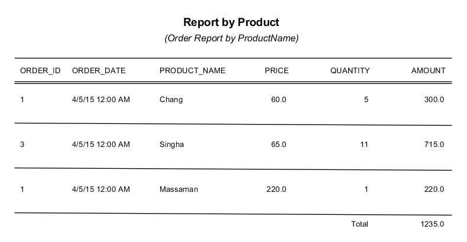

Jasper Reports and iReport
What is Jasper Reports?
- An open source java reporting engine
- JasperReports is a Java class library.
- Designed to aid developers with the task of adding reporting capabilities to Java Application.
Features?
- It has flexible report layout.
- It is capable of presenting data textually or graphically.
- Support multiple data sources
- Database connection
- Embedded SQL statement
- Java Collections (Collection, Array and Map)
- JDBC result set
- Support multiple report formats
- PDF, XLS, CSV, HTML, XML, RTF, ODT, TXT
Life Cycle
- Design Phase (Create JRXML file)
- Compile (compile JRXML to jasper template)
- Execution Phase (Fill the Jasper template with data to generate Jasper print file(.jrprint))
- Export Phase (Export the report to any desired format)
JRXML Example
<band height="79" splitType="Stretch"/>
Report Section
Report Section(Cont.)
- Title - This section appears only once at the beginning of the report.
- Page Header -This section appears at the beginning of each page in the generated document.
- Column Header -This section appears at the beginning of each column in the generated document. If the report has only one column defined, then column header and footer sections are ignored.
Report Section(Cont.)
- Detail - This section is repeated for each line of data supplied by the report's data source. The detail section can be made of multiple bands.
- Column Footer - This section appears at the bottom of each column. If the report's column count is 1, then column header and footer sections are ignored.
- Page Footer -This section appears at the bottom of each page.
- Summary -This section appears only once at the end of the report.
Elements in JRXML
- <staticText> Defines static text that does not depend on any datasources, variables, parameters, or report expressions.
- <textField> Used to display dynamic textual data in reports.
- <textFieldExpression>Defines the data that is displayed in text fields.
- <field>This element is used to map data from datasources or queries into report templates. Fields can be combined in report expressions to obtain the necessary output.
Elements in JRXML(cont.)
- <variable>Report expressions, used several times in a report, can be assigned to variables to simplify the template.
- <parameter>This element is used to define report parameters. Parameter values are supplied via a java.util.Map by calling the appropriate methods in the JasperReports API.
- <group>This element is used to group consecutive records in a datasource sharing some common characteristics.
- etc.
Jasper Report in action
- JasperReports uses a template file (JRXML) that defines the report layout
- iReport is a visual designer for JasperReports
- It creates and edits JRXML files, and allows you to run reports on your desktop.
JasperReports
iReport
What is iReport?
- Program that helps developers that use the JasperReports library to visually design reports, very simple to use GUI.
- Provide all importatnt functions to create nice reports in a little time.
- Help people that don't know the JasperReports library create complex reports and learn the XML syntax.
- iReport is written in Java.
The Main Features of iReport
- 98% of JasperReports tags supported
- Visual designer
- Built-in editor with syntax highlighting for write expression
- Support for Unicode,
- Support of all JDBC compliant databases
- Wizard to create automatically reports
- Support for sub reports
- Facilities for fonts
- etc.
Report Life Cycle
User Interface
- Report Designer is where you visually design the report by dragging, positioning, aligning and resizing report elements.
- Report Inspector
- shows the report which is composed of many objects (such as fields, parameters and variables)
- bands (which are sections of the document)
- elements (such as textfields, images or charts)
- Elements Palette contains the elements that can be dragged inside a band to display your data.
- Property Sheet is used to set the properties of the currently selected component in the report.
Report Designer
- Data source selector, which shows the active connection that will be used to execute the report
- Designer toolbar has three buttons to easily switch from design to preview mode.
Download and install?
Go to link. http://sourceforge.net/projects/ireport/files/iReport/iReport-5.6.0/ Click on Download.
- Window download .zip or window-installer.exe
- Programs menu > JasperSoft > iReport
- Mac or a Linux box, consider to download iReport-.tar.gz
- run: iReport.sh. from a shell.
First Report
- Setup Connection
- Create report with Blank Template
- Launch Report Wizard
Exersise
Create product report
Parameter & Variable in Report?
Exersise
Create product report with parameter and variable

Group by Report?
Exersise
Create product report group by category
Exersise 2
Create Order report group by order and category
Subreport?
Exersise
Create order report

Crosstab Report?
Exersise
Create summary product by employee
Exersise 2
Create Order report group by employee
Exersise 3
Create Order report group by order and category
Chart?
Exersise
Create summary product sale
Exersise
Create summary product sale
Show BLOB Image in iReport?
Exersise
Create product report with image
Background Image in iReport?
Exersise
Append background image to report